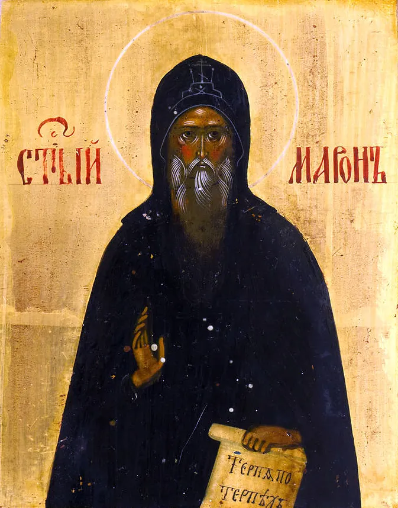
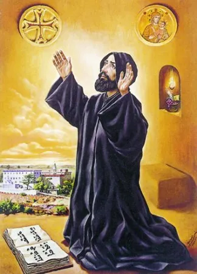
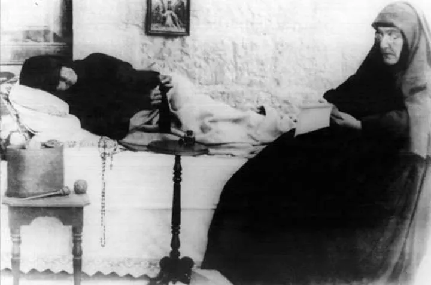
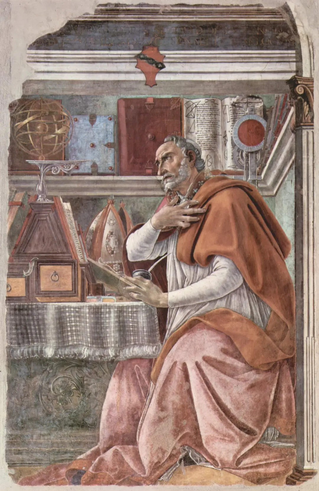
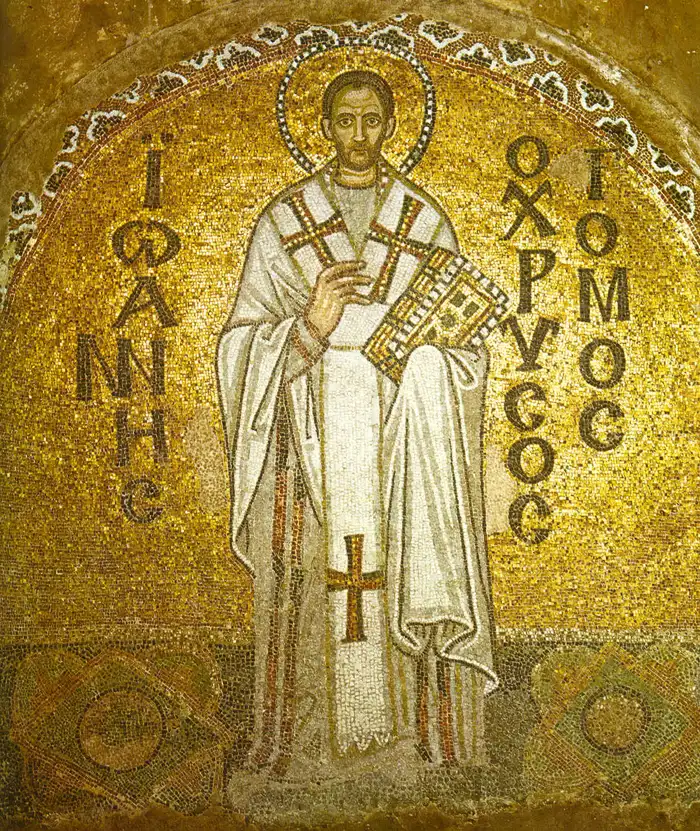
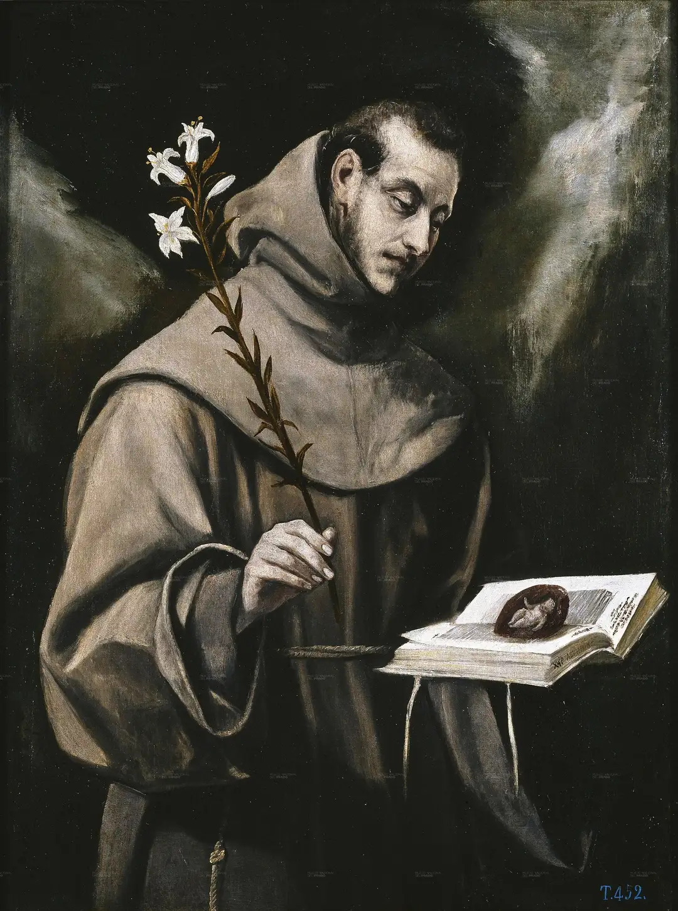

Saint Charbel Makhlouf (1828-1898)

The reason this site exists: the hermit of Annaya, monk of the Lebanese Maronite Order, whose tomb became a place of pilgrimage and healing for Christians and Muslims alike. Begin with his story.
The holy women and men whose stories this site tells - the hermit of Annaya first, then the saints around his tradition, and now the blesseds whose causes are still unfolding. Titles are kept exact: a saint is canonized by the universal Church; a blessed is beatified, one step earlier. Each card says which is which.
The reason this site exists: the hermit of Annaya, monk of the Lebanese Maronite Order, whose tomb became a place of pilgrimage and healing for Christians and Muslims alike. Begin with his story.

The hermit on the mountain whose disciples gave the Maronite Church its name - healer of body and soul, friend of John Chrysostom, root of the whole tradition Saint Charbel grew from.

The monk who taught Saint Charbel - scholar, ascetic, and teacher at Kfifan, where his tomb and shrine still receive pilgrims.

The blind saint of Lebanon, first woman of Lebanon to be canonized - a nun of Saint Charbel's own order who called a lifetime of suffering a gift. Her shrine is at Jrabta.
The Capuchin who bore the stigmata for fifty years, heard confessions for up to sixteen hours a day, built a hospital, and left the world one counsel: "Pray, hope, and don't worry." His story, his prayers, his way, and the pilgrimage.
The pilgrim pope: a quarry worker who became the first Polish pope, survived an assassin's bullet and forgave him, carried the Gospel to 129 countries, and told the world not to be afraid. Canonized the two Maronite saints closest to Saint Charbel.
The Albanian schoolteacher who heard a call within a call and spent fifty years with the poorest of the poor - the home for the dying, the Nobel Peace Prize, and a hidden darkness she turned into fidelity.

The restless heart: a brilliant young professor who ran from God across the Mediterranean, heard a child's "take and read" in a Milan garden, and became the bishop of Hippo whose Confessions and City of God shaped the Western mind. His mother Monica's feast is kept the day before his.

The Golden Mouth: Antioch's greatest preacher, made archbishop of Constantinople, twice exiled for preaching Christ in the poor to an imperial court. He died on the road to exile with "Glory to God for all things" on his lips - a Father of the Antiochian tradition the Maronite Church grew from.

The poor man of Assisi: a merchant's son who heard Christ from the San Damiano cross, rebuilt the Church in poverty, met the Sultan, received the stigmata, and sang the Canticle of the Creatures - the most imitated saint in Christian history.

Lisbon's Fernando became a Franciscan, astonished Europe with his preaching, taught theology with Saint Francis's own blessing, and was canonized less than a year after his death - the saint the world asks for lost things.
Beatified, not yet canonized - the Church has declared them in heaven, and their causes continue toward sainthood.

The media bishop: Emmy-winning host of Life Is Worth Living, beatified in Saint Louis, Missouri before some 50,000 pilgrims. His life, what beatification means, and where to watch his talks.
One page per holy person, built to the same standard: a plain statement of their status (saint or blessed), a sourced life, honest distinctions between what the Church has formally recognized and what devotion reports, and links to pray, visit, and learn more. New saints and blesseds join this page as their pages are written - one card each.
More lives around this tradition: Maronite history, the feast day, and becoming like Charbel in daily practice.